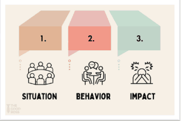
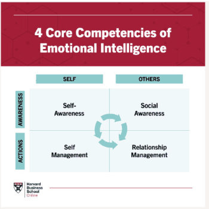
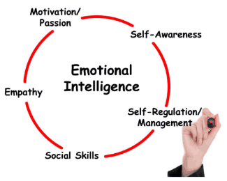

Chủ đề 8: Điều chỉnh hành vi thông qua coaching
Topic 8: Correcting Behaviour Through Coaching — bản đối chiếu Anh – Việt
TS. Thao Luong · 44 slide
Quy ước của bản dịch. Mỗi slide là một khối: cột bên trái là nguyên văn tiếng Anh (màu xám), cột bên phải là bản tiếng Việt (màu đen). Nội dung được dịch sát theo từng slide, không lược bỏ. Chữ nằm trong hình đồ hoạ của slide cũng được dịch. Khẩu hiệu “Ready for what’s next” của RMIT xuất hiện ở hầu hết các slide nên không nhắc lại.
Phần mô tả hình ảnh, video và các slide lặp lại được ghi bằng chữ nghiêng màu xám. Đó là ghi chú của bản dịch, không phải nội dung gốc trên slide.
Tên riêng, tên tổ chức và trích dẫn nguồn giữ nguyên. Coaching được giữ nguyên, hiểu là cách người quản lý dùng câu hỏi để giúp nhân viên tự suy ngẫm và thay đổi. Bốn bước của buổi học được dịch là: Notice – “Nhận diện”, Converse – “Đối thoại”, Coach – “Coaching”, Hold Accountable – “Giữ trách nhiệm”. Standard là “chuẩn mực”, ownership là “tinh thần làm chủ”. Emotional Intelligence (EI) là “trí tuệ cảm xúc”; chữ viết tắt EI ở chủ đề này khác với EI (External Identity) ở chủ đề 7. Self-awareness là “tự nhận thức”, self-management là “tự quản lý”.
Topic 8: Correcting Behavior Through Coaching
Chủ đề 8: Điều chỉnh hành vi thông qua coaching
Dr Thao Luong
TS. Thao Luong
Slide tiêu đề của chương trình me.grow (RMIT University Vietnam, Saigon South Campus – Zalo). Dòng phụ đề trên slide bị cắt ở chữ “car”; bản dịch hiểu là “care”.
About this session
Về buổi học này
For the first time, you are not only responsible for your own performance, you are responsible for setting expectations, giving feedback, addressing behaviour, and helping others succeed.
Some of these conversations will feel uncomfortable. This session helps you approach them with clarity, confidence and care, using coaching to create reflection and ownership, while remaining clear about expectations and accountability.
By the end of this session, you will:
- Recognize behavior that needs your attention and address it early;
- Raise difficult issues clearly without attacking the person;
- Use questions to help people reflect, take ownership and find a better way forward;
- Be supportive while remaining clear about standards and expected change.
Lần đầu tiên, bạn không chỉ chịu trách nhiệm về hiệu suất của riêng mình, mà còn chịu trách nhiệm đặt ra kỳ vọng, đưa phản hồi, xử lý hành vi và giúp người khác thành công.
Một số cuộc trò chuyện như vậy sẽ khiến bạn không thoải mái. Buổi học này giúp bạn tiếp cận chúng với sự rõ ràng, tự tin và quan tâm, dùng coaching để tạo ra sự suy ngẫm và tinh thần làm chủ, đồng thời vẫn rõ ràng về kỳ vọng và trách nhiệm.
Kết thúc buổi học, bạn sẽ:
- Nhận ra hành vi cần mình lưu tâm và xử lý sớm;
- Nêu vấn đề khó một cách rõ ràng mà không công kích con người;
- Dùng câu hỏi để giúp người khác suy ngẫm, nhận trách nhiệm và tìm ra hướng đi tốt hơn;
- Hỗ trợ người khác trong khi vẫn rõ ràng về chuẩn mực và sự thay đổi được kỳ vọng.
Bên cạnh là ảnh một người đang vẽ những bậc thang cho hình người bước lên.
Agenda
Chương trình
- Notice: “What should I address?”
- Converse: Raise difficult issues clearly and manage your emotions
- Coach: Use questions to create reflection and ownership
- Hold Accountable: Stay supportive while remaining clear about expected changes
- Nhận diện: “Tôi nên xử lý điều gì?”
- Đối thoại: Nêu vấn đề khó một cách rõ ràng và quản lý cảm xúc của bạn
- Coaching: Dùng câu hỏi để tạo ra sự suy ngẫm và tinh thần làm chủ
- Giữ trách nhiệm: Luôn hỗ trợ nhưng vẫn rõ ràng về những thay đổi được kỳ vọng
About me
Về tôi
Senior Program Manager – Lecturer (Human Resource Management)
E-mail: thao.luong3@rmit.edu.vn
Education:
- Ph.D. in Knowledge Science, Japan Advanced Institute of Science and Technology (Japan)
- Master in HRM, Griffith University (Australia)
- Bachelor in Business, University of Economics HCMC (Vietnam)
- CHT & CHE (American Hotel and Lodging Educational Institute)
- Trained Facilitator in the LEGO® Serious Play® Methodology
Work Experience (15 years): Sales (PepsiCo International), HR (FrieslandCampina), Corporate Training (Saigontourist Group), VP (Saigontourist Hospitality College)
Quản lý Chương trình cấp cao – Giảng viên (Quản trị Nguồn nhân lực)
E-mail: thao.luong3@rmit.edu.vn
Học vấn:
- Tiến sĩ Khoa học Tri thức, Viện Khoa học và Công nghệ Tiên tiến Nhật Bản (Nhật Bản)
- Thạc sĩ Quản trị Nguồn nhân lực, Đại học Griffith (Úc)
- Cử nhân Kinh doanh, Đại học Kinh tế TP.HCM (Việt Nam)
- CHT & CHE (Viện Giáo dục Khách sạn và Lưu trú Hoa Kỳ – American Hotel and Lodging Educational Institute)
- Điều phối viên được đào tạo về phương pháp LEGO® Serious Play®
Kinh nghiệm làm việc (15 năm): Bán hàng (PepsiCo International), Nhân sự (FrieslandCampina), Đào tạo doanh nghiệp (Saigontourist Group), Phó Hiệu trưởng (Saigontourist Hospitality College)
Our Playbook
Luật chơi của chúng ta
- Be fully present
- Try to earn the playground money for your team
- Honor others’ opinions
- Put cellphones away and on vibrate (if possible)
- Please don’t hurt anyone
- Use burning thoughts for questions
- Relax and have fun
- “Through discipline comes freedom” – Aristotle
- Hiện diện trọn vẹn
- Cố gắng kiếm “tiền sân chơi” về cho đội của bạn
- Tôn trọng ý kiến của người khác
- Cất điện thoại và để chế độ rung (nếu có thể)
- Xin đừng làm ai bị tổn thương
- Dùng những suy nghĩ còn trăn trở để đặt câu hỏi
- Thư giãn và vui vẻ
- “Tự do đến từ kỷ luật” – Aristotle
Slide minh hoạ bằng hình Aristotle, một xấp tiền đồ chơi và chiếc ô RMIT.
1. Notice: “What should I address?”
1. Nhận diện: “Tôi nên xử lý điều gì?”
NOTICE starts with the role shift
NHẬN DIỆN bắt đầu từ sự chuyển đổi vai trò
| From Từ | To Đến |
| My work Công việc của tôi | Our work Công việc của chúng ta |
| My standards Chuẩn mực của tôi | Team standards Chuẩn mực của nhóm |
| My relationships Các mối quan hệ của tôi | Fairness across relationships Sự công bằng trong mọi mối quan hệ |
| My discomfort Sự khó chịu của tôi | My responsibility to act Trách nhiệm hành động của tôi |
Discussion Activity: Notice or let it go?
Hoạt động thảo luận: Nhận diện hay bỏ qua?
| Case Tình huống | English | Tiếng Việt |
| A | A usually reliable employee is 10 minutes late once. | Một nhân viên vốn đáng tin cậy đi trễ 10 phút một lần. |
| B | A strong performer repeatedly interrupts junior colleagues. | Một nhân viên giỏi liên tục ngắt lời các đồng nghiệp ít kinh nghiệm hơn. |
| C | Two colleagues disagree strongly about a technical approach. | Hai đồng nghiệp bất đồng gay gắt về một hướng tiếp cận kỹ thuật. |
| D | A team member publicly mocks another person’s suggestion. | Một thành viên chế giễu đề xuất của người khác trước mặt mọi người. |
| E | Someone prefers a different working style from yours. | Một người thích phong cách làm việc khác với bạn. |
| F | A team member repeatedly ignores an agreed team process. | Một thành viên nhiều lần phớt lờ quy trình mà cả nhóm đã thống nhất. |
The 5-Impact Test
Bài kiểm tra 5 tác động
When deciding whether a behavior needs addressing, consider:
Khi quyết định một hành vi có cần được xử lý hay không, hãy cân nhắc:
| Impact Tác động | English | Tiếng Việt |
| PERFORMANCE Hiệu suất | Does it affect results, quality, productivity or delivery? | Nó có ảnh hưởng đến kết quả, chất lượng, năng suất hay tiến độ bàn giao không? |
| PEOPLE Con người | Does it affect colleagues, workload, wellbeing or collaboration? | Nó có ảnh hưởng đến đồng nghiệp, khối lượng công việc, sức khoẻ tinh thần hay sự cộng tác không? |
| CULTURE Văn hoá | Does it reinforce or undermine the behaviors we expect? | Nó củng cố hay làm xói mòn những hành vi mà chúng ta kỳ vọng? |
| TRUST Niềm tin | Does it affect reliability, credibility or working relationships? | Nó có ảnh hưởng đến độ tin cậy, uy tín hay quan hệ công việc không? |
| POLICY / ETHICS Chính sách / Đạo đức | Does it create a compliance, fairness, safety or ethical concern? | Nó có gây ra vấn đề về tuân thủ, công bằng, an toàn hay đạo đức không? |

Slide nhắc lại sáu tình huống A–F của slide 08, thêm một câu kết:
2. Converse: Raise difficult issues clearly and manage your emotions
2. Đối thoại: Nêu vấn đề khó một cách rõ ràng và quản lý cảm xúc của bạn
Kèm hình một trái tim và một bộ não đối diện nhau.
CONVERSE starts with what you can observe
ĐỐI THOẠI bắt đầu từ những gì bạn quan sát được
| Person / Judgement Con người / Phán xét | Behaviour / Observation Hành vi / Quan sát |
| “You’re disrespectful and difficult.” “Bạn thật thiếu tôn trọng và khó chịu.” | “In today’s meeting, you interrupted Lan three times while she was presenting.” “Trong cuộc họp hôm nay, bạn đã ngắt lời Lan ba lần khi cô ấy đang trình bày.” |
“I want us to challenge ideas strongly, and I expect us to let colleagues finish and respond to the idea, not the person.”
“Tôi muốn chúng ta phản biện ý tưởng thật mạnh mẽ, và tôi mong chúng ta để đồng nghiệp nói hết, rồi phản hồi vào ý tưởng chứ không nhắm vào con người.”
Activity: Rewrite the opening
Hoạt động: Viết lại câu mở đầu
| Opening Câu mở đầu | Your rewrite Bạn viết lại |
| “You’ve got a bad attitude.” “Bạn có thái độ không tốt.” | Rewrite here: observation + standard Viết lại tại đây: quan sát + chuẩn mực Ví dụ gợi ý · không có trên slide “In this morning’s review, you rolled your eyes and said ‘this won’t work’ twice before Minh finished explaining. I expect us to hear the full proposal before we challenge it.” “Trong buổi review sáng nay, bạn đã đảo mắt và hai lần nói ‘cách này không được đâu’ trước khi Minh giải thích xong. Tôi mong chúng ta nghe hết đề xuất rồi mới phản biện.” |
| “Everyone thinks you’re difficult.” “Ai cũng thấy bạn khó chịu.” | Rewrite here: observation + standard Viết lại tại đây: quan sát + chuẩn mực Ví dụ gợi ý · không có trên slide “This week, two colleagues told me they didn’t get replies to their messages about the release for two days. I expect us to reply to teammates within one working day, even if it’s just to say when we can help.” “Tuần này, hai đồng nghiệp cho tôi biết tin nhắn của họ về đợt phát hành không được bạn trả lời suốt hai ngày. Tôi mong chúng ta phản hồi đồng đội trong vòng một ngày làm việc, dù chỉ để báo khi nào mình có thể hỗ trợ.” |
| “Can you be more professional?” “Bạn có thể chuyên nghiệp hơn được không?” | Rewrite here: observation + standard Viết lại tại đây: quan sát + chuẩn mực Ví dụ gợi ý · không có trên slide “In yesterday’s client call, you joined 15 minutes late and had not reviewed the agenda we shared. I expect us to be on time and prepared for client meetings.” “Trong cuộc gọi với khách hàng hôm qua, bạn vào muộn 15 phút và chưa xem trước chương trình họp mà nhóm đã gửi. Tôi mong chúng ta đến đúng giờ và chuẩn bị trước cho các buổi họp với khách hàng.” |
| “You always make meetings unpleasant.” “Lúc nào bạn cũng làm cuộc họp trở nên khó chịu.” | Rewrite here: observation + standard Viết lại tại đây: quan sát + chuẩn mực Ví dụ gợi ý · không có trên slide “In the last two stand-ups, you replied to Lan’s updates with ‘that’s obvious’ and ‘again?’. I expect us to respond to updates respectfully and raise concerns about the work, not the person.” “Trong hai buổi họp đầu ngày gần nhất, bạn đáp lại cập nhật của Lan bằng câu ‘chuyện hiển nhiên mà’ và ‘lại nữa à?’. Tôi mong chúng ta phản hồi các cập nhật một cách tôn trọng và nêu băn khoăn về công việc, không nhắm vào con người.” |
At this stage, also try to manage your emotions
Ở giai đoạn này, hãy cố gắng quản lý cả cảm xúc của bạn
Kèm ảnh một người đàn ông cầm nhiều tấm giấy vẽ các gương mặt biểu cảm khác nhau.
What are Emotions?
Cảm xúc là gì?
- Emotions are psychological and physiological responses to situations that matter to us.
- They influence how we think, feel, and act.
In simple terms, emotions:
- are signals about what we are experiencing
- shape our attention and interpretation
- affect our reactions, decisions, and relationships
- can help or hinder us, depending on how we manage them
- Cảm xúc là những phản ứng tâm lý và sinh lý trước các tình huống có ý nghĩa với chúng ta.
- Chúng ảnh hưởng đến cách chúng ta suy nghĩ, cảm nhận và hành động.
Nói đơn giản, cảm xúc:
- là tín hiệu về những gì chúng ta đang trải qua
- định hướng sự chú ý và cách chúng ta diễn giải
- ảnh hưởng đến phản ứng, quyết định và các mối quan hệ của chúng ta
- có thể giúp ích hoặc cản trở chúng ta, tuỳ vào cách chúng ta quản lý chúng
Activity: Emotion Check-In
Hoạt động: Điểm danh cảm xúc
Instructions
Think of a recent work situation where you felt a strong emotion as a leader or colleague. It could be frustration, pressure, disappointment, pride, anxiety, or excitement.
Reflect on these questions:
- What happened?
- How/What did you feel?
- How did that emotion affect your response?
Process
- 2 minutes individual reflection
- 3 minutes pair sharing
- Be ready to share one insight with the room
Hướng dẫn
Hãy nghĩ về một tình huống công việc gần đây khi bạn trải qua một cảm xúc mạnh, với tư cách người lãnh đạo hay đồng nghiệp. Đó có thể là bực bội, áp lực, thất vọng, tự hào, lo lắng hay hào hứng.
Suy ngẫm về các câu hỏi sau:
- Chuyện gì đã xảy ra?
- Bạn đã cảm thấy thế nào/cảm thấy gì?
- Cảm xúc đó ảnh hưởng thế nào đến phản ứng của bạn?
Cách thực hiện
- 2 phút suy ngẫm cá nhân
- 3 phút chia sẻ theo cặp
- Sẵn sàng chia sẻ một điều nhận ra với cả lớp
Kèm hình những quả bóng mặt cười nhiều màu với các biểu cảm khác nhau.
Debrief message
Thông điệp tổng kết
- Emotions are always present in leadership.
- Emotional intelligence begins with noticing them before they start shaping our behavior unconsciously.
- Cảm xúc luôn hiện diện trong công việc lãnh đạo.
- Trí tuệ cảm xúc bắt đầu từ việc nhận ra cảm xúc trước khi chúng âm thầm chi phối hành vi của chúng ta.
Kèm ảnh bìa sách Primal Leadership.
What is Emotional Intelligence (EI)?
Trí tuệ cảm xúc (EI) là gì?
EI is the ability to recognize, understand, manage, and use emotions effectively in ourselves and in our interactions with others
Emotional intelligence includes the ability to:
- notice what we are feeling
- understand how emotions affect our thoughts and behavior
- regulate our responses in constructive ways
- recognize emotions in others
- respond in ways that support trust, communication, and relationships
EI là khả năng nhận biết, thấu hiểu, quản lý và sử dụng cảm xúc một cách hiệu quả, ở chính mình và trong tương tác với người khác
Trí tuệ cảm xúc bao gồm khả năng:
- nhận biết mình đang cảm thấy gì
- hiểu cảm xúc ảnh hưởng thế nào đến suy nghĩ và hành vi
- điều chỉnh phản ứng của mình theo hướng xây dựng
- nhận biết cảm xúc của người khác
- phản hồi theo cách củng cố niềm tin, giao tiếp và các mối quan hệ
(Grewal et al., 2006)

Activity: Video Observation (Group Activity)
Hoạt động: Quan sát video (hoạt động nhóm)
Discussion questions
- What emotions did you notice in the interaction?
- What signs of high or low emotional intelligence did you observe?
- How did emotions influence communication and behavior?
- How might the interaction have gone differently with stronger emotional intelligence?
- What leadership lessons can we take from this example?
Câu hỏi thảo luận
- Bạn nhận thấy những cảm xúc nào trong cuộc tương tác?
- Bạn quan sát được những dấu hiệu nào của trí tuệ cảm xúc cao hoặc thấp?
- Cảm xúc đã ảnh hưởng thế nào đến giao tiếp và hành vi?
- Cuộc tương tác có thể diễn ra khác đi thế nào nếu trí tuệ cảm xúc mạnh hơn?
- Chúng ta rút ra được bài học lãnh đạo nào từ ví dụ này?
Kèm khung hình của một đoạn phim được chiếu trong lớp.
Debrief message
Thông điệp tổng kết
- Emotional intelligence becomes visible in how leaders respond, communicate, and influence others in real situations.
- Trí tuệ cảm xúc hiện ra qua cách người lãnh đạo phản ứng, giao tiếp và tạo ảnh hưởng tới người khác trong những tình huống thực tế.
Kèm ảnh bìa sách Primal Leadership.
Self-Awareness and Self-Management
Tự nhận thức và tự quản lý
- Self-awareness: noticing feelings, intuition, and inner signals
- Self-management: managing emotions, attitudes, and behavior more effectively
These two are closely linked:
- self-awareness helps us recognize what we feel
- self-management helps us act constructively under pressure
- together, they support better performance and stronger relationships
- Tự nhận thức: nhận biết cảm xúc, trực giác và các tín hiệu bên trong
- Tự quản lý: quản lý cảm xúc, thái độ và hành vi hiệu quả hơn
Hai yếu tố này gắn chặt với nhau:
- tự nhận thức giúp chúng ta nhận ra mình đang cảm thấy gì
- tự quản lý giúp chúng ta hành động có tính xây dựng khi chịu áp lực
- kết hợp lại, chúng giúp làm việc hiệu quả hơn và xây dựng quan hệ bền chặt hơn
(Neale et al., 2009)
Self-Awareness
Tự nhận thức
People with stronger self-awareness are more able to:
- notice what they are feeling in the moment
- recognize emotional triggers
- understand where emotions show up in the body
- connect emotions to underlying attitudes, beliefs, or values
- learn from emotional patterns instead of repeating them automatically
Người có khả năng tự nhận thức tốt hơn thường có thể:
- nhận biết mình đang cảm thấy gì ngay lúc đó
- nhận ra những yếu tố kích hoạt cảm xúc
- hiểu cảm xúc biểu hiện ở đâu trên cơ thể
- liên hệ cảm xúc với thái độ, niềm tin hay giá trị ẩn bên dưới
- rút kinh nghiệm từ các khuôn mẫu cảm xúc thay vì lặp lại chúng một cách tự động
(Neale et al., 2009)
Activity: Self-Awareness Through Emotional Reflection
Hoạt động: Tự nhận thức qua suy ngẫm cảm xúc
Self-awareness questions after watching:
- What emotion am I feeling right now?
- What is triggering this reaction in me?
- What personal values does this response reflect?
- If I were to react immediately, what might I do?
- What would a more self-aware and self-managed response look like?
Câu hỏi tự nhận thức sau khi xem:
- Lúc này tôi đang cảm thấy gì?
- Điều gì đang kích hoạt phản ứng này trong tôi?
- Phản ứng này phản ánh những giá trị cá nhân nào?
- Nếu phản ứng ngay lập tức, tôi có thể sẽ làm gì?
- Một phản ứng có tự nhận thức và tự quản lý tốt hơn sẽ trông như thế nào?
Kèm khung hình của đoạn video được chiếu.
What is Self-Management?
Tự quản lý là gì?
Self-management is the ability to regulate emotions, manage impulses, and respond in constructive ways, especially under pressure.
Self-management helps leaders to:
- stay calm in difficult situations
- pause before reacting
- respond thoughtfully rather than emotionally
- remain focused and disciplined
- act in ways that support trust and effectiveness
Tự quản lý là khả năng điều chỉnh cảm xúc, kiểm soát sự bốc đồng và phản hồi theo cách có tính xây dựng, nhất là khi chịu áp lực.
Tự quản lý giúp người lãnh đạo:
- giữ bình tĩnh trong tình huống khó khăn
- dừng lại trước khi phản ứng
- phản hồi có cân nhắc thay vì theo cảm xúc
- giữ sự tập trung và kỷ luật
- hành động theo cách củng cố niềm tin và hiệu quả
(Neale et al., 2009)

Activity 6: Self Management in Action
Hoạt động 6: Tự quản lý trong thực tế
Group Discussion:
Thảo luận nhóm:
Kèm khung hình của đoạn video về nhân vật Jeff được chiếu trong lớp.
Why Self-Awareness and Self-Management Matter
Vì sao tự nhận thức và tự quản lý quan trọng
- Emotions are involved in every action, decision, and judgment
- Whatever the situation, we are always thinking, feeling, and doing
- Attitudes influence emotions, and emotions influence behavior
- When emotions take over thinking, we can experience an emotional hijack
- Cảm xúc tham gia vào mọi hành động, quyết định và nhận định
- Dù trong tình huống nào, chúng ta luôn suy nghĩ, cảm nhận và hành động
- Thái độ ảnh hưởng đến cảm xúc, và cảm xúc ảnh hưởng đến hành vi
- Khi cảm xúc lấn át lý trí, chúng ta có thể rơi vào trạng thái bị cảm xúc “chiếm quyền” (emotional hijack)
(Neale et al., 2009)
Leadership Implications
Hàm ý đối với lãnh đạo
- react habitually rather than thoughtfully
- let frustration, fear, or defensiveness drive behavior
- reduce trust, clarity, and effectiveness
With stronger self-awareness and self-management, leaders are better able to:
- pause
- interpret what they are feeling
- manage their response
- act more constructively under pressure
- phản ứng theo thói quen thay vì có cân nhắc
- để sự bực bội, sợ hãi hay tâm thế phòng thủ chi phối hành vi
- làm giảm niềm tin, sự rõ ràng và hiệu quả
Khi tự nhận thức và tự quản lý tốt hơn, người lãnh đạo có khả năng:
- dừng lại
- diễn giải điều mình đang cảm thấy
- quản lý phản ứng của mình
- hành động có tính xây dựng hơn khi chịu áp lực
(Neale et al., 2009)
Slide nhắc lại nội dung slide 12 (câu phán xét và câu quan sát, cùng cách nêu chuẩn mực). Dòng cuối được thay bằng:
3. Coach: Use questions to create reflection and ownership
3. Coaching: Dùng câu hỏi để tạo ra sự suy ngẫm và tinh thần làm chủ
Kèm hình minh hoạ hai người ngồi trò chuyện.
What is coaching for behavioral change?
Coaching để thay đổi hành vi là gì?
COACHING = helping someone THINK so they can CHANGE
COACHING = giúp một người SUY NGHĨ để họ có thể THAY ĐỔI
| 1 · See Nhìn nhận | 2 · Reflect Suy ngẫm | 3 · Own Làm chủ | 4 · Change Thay đổi |
| Recognise what I did Nhận ra điều tôi đã làm | Understand the impact Hiểu tác động | Take responsibility Nhận trách nhiệm | Choose a better behavior Chọn một hành vi tốt hơn |
Sources / Nguồn: Ellinger et al. (2011), definition reproduced/discussed in Turner et al. (2023), Frontiers in Psychology; CIPD (2025).
Coaching is not the same as being “soft”
Coaching không có nghĩa là “dễ dãi”
| Left column (red) Cột trái (màu đỏ) | Right column (green) Cột phải (màu xanh) |
| TELLING · Ra lệnh “Don’t do that again.” “Đừng làm thế nữa.” | CLARIFYING · Làm rõ Make the behavior and standard visible. Nêu rõ hành vi và chuẩn mực. |
| JUDGING · Phán xét “You have a bad attitude.” “Bạn có thái độ không tốt.” | QUESTIONING · Đặt câu hỏi Help the employee examine what happened. Giúp nhân viên xem xét lại chuyện đã xảy ra. |
| EXCUSING · Bao biện “I understand, so it’s okay.” “Tôi hiểu mà, nên không sao đâu.” | LISTENING + CHALLENGING · Lắng nghe + chất vấn Explore perspective without abandoning the standard. Tìm hiểu góc nhìn của họ mà không từ bỏ chuẩn mực. |
| FIXING · Làm thay “Here’s exactly what you should do.” “Đây chính xác là điều bạn nên làm.” | OWNERSHIP · Làm chủ Let the employee articulate a better response. Để nhân viên tự nói ra cách phản ứng tốt hơn. |
CIPD (2025): workplace coaching uses one-to-one conversations to enhance skills, knowledge or work performance and focuses on specific skills and goals.
CIPD (2025): coaching tại nơi làm việc dùng các cuộc trò chuyện một-một để nâng cao kỹ năng, kiến thức hay hiệu quả công việc, và tập trung vào những kỹ năng và mục tiêu cụ thể.
Activity: Intention ≠ impact
Hoạt động: Ý định ≠ tác động
| Employee Nhân viên | Manager Quản lý |
| “I was only joking. I didn’t mean to offend anyone.” “Tôi chỉ đùa thôi. Tôi không có ý xúc phạm ai cả.” | Acknowledge intention → refocus on impact → ask for an alternative Ghi nhận ý định → quay về tác động → đề nghị một cách làm khác |
Trên slide, phần sau dấu hai chấm để trống.
Listening as Emotional Intelligence
Lắng nghe – một biểu hiện của trí tuệ cảm xúc
Common barriers to listening, such as:
- getting distracted by inner thoughts
- planning what to say next
- interrupting
- listening through labels or preconceptions
- turning the conversation back to yourself
- dismissing or trivializing others’ concerns
- giving answers too quickly
Những rào cản thường gặp khi lắng nghe, chẳng hạn:
- bị phân tâm bởi suy nghĩ trong đầu
- lo tính trước điều sẽ nói tiếp
- ngắt lời
- nghe qua lăng kính của nhãn dán hay định kiến
- kéo câu chuyện quay về bản thân mình
- gạt đi hoặc xem nhẹ mối bận tâm của người khác
- đưa ra câu trả lời quá nhanh
Three Levels of Listening
Ba cấp độ lắng nghe
| Level Cấp độ | English | Tiếng Việt |
| 1 · Factual listening Lắng nghe dữ kiện |
|
|
| 2 · Emotional listening Lắng nghe cảm xúc |
|
|
| 3 · Intuitive listening Lắng nghe trực giác |
|
|
(Neale et al., 2009)
Questioning to Understand Others
Đặt câu hỏi để thấu hiểu người khác
- Questioning is crucial for understanding others
- Open questions are more helpful than closed questions
- Closed questions often keep people closed
- Questions can be used not only to get information for ourselves, but also to help others generate useful insight for themselves.
Examples of open questions:
- How are you feeling about this situation?
- What matters most to you here?
- What do you think is making this difficult?
- What would help most right now?
- Đặt câu hỏi là yếu tố then chốt để thấu hiểu người khác
- Câu hỏi mở hữu ích hơn câu hỏi đóng
- Câu hỏi đóng thường khiến người ta khép lại
- Câu hỏi không chỉ giúp chúng ta lấy thông tin, mà còn giúp người khác tự rút ra những nhận thức hữu ích cho chính họ.
Ví dụ về câu hỏi mở:
- Bạn cảm thấy thế nào về tình huống này?
- Điều gì quan trọng nhất với bạn ở đây?
- Theo bạn, điều gì đang khiến việc này trở nên khó khăn?
- Điều gì sẽ giúp ích nhất lúc này?
Kèm hình minh hoạ hai người đang trò chuyện.
4. Hold Accountable: Stay supportive while remaining clear about expected changes
4. Giữ trách nhiệm: Luôn hỗ trợ nhưng vẫn rõ ràng về những thay đổi được kỳ vọng
Kèm hình cột biển chỉ đường, một biển ghi “Clear Expectations” (Kỳ vọng rõ ràng).
HOLD ACCOUNTABLE: support + standard
GIỮ TRÁCH NHIỆM: hỗ trợ + chuẩn mực
| Low accountability Trách nhiệm thấp | High accountability Trách nhiệm cao | |
| High support Hỗ trợ cao | Supportive but unclear Hỗ trợ nhưng thiếu rõ ràng | DEVELOPMENT + ACCOUNTABILITY PHÁT TRIỂN + TRÁCH NHIỆM |
| Low support Hỗ trợ thấp | Avoidance Né tránh | Command / compliance Ra lệnh / tuân thủ |
Trên slide, ô “Development + Accountability” được tô xanh lá để nhấn mạnh.
When they push back
Khi họ phản kháng
| Employee says Nhân viên nói | Employee says Nhân viên nói |
| “That’s not what happened.” “Không phải chuyện như vậy.” | “Everyone does it.” “Ai cũng làm thế mà.” |
| “Why are you picking on me?” “Sao anh/chị cứ nhắm vào tôi?” | “She started it.” “Cô ấy gây chuyện trước.” |
| “I’m just being honest.” “Tôi chỉ nói thật thôi.” | “Fine. I won’t say anything anymore.” “Được thôi. Từ giờ tôi không nói gì nữa.” |
“I hear that you value being direct. I want you to keep challenging ideas. I am asking you to change how you express disagreement with colleagues.”
“Tôi hiểu là bạn coi trọng sự thẳng thắn. Tôi muốn bạn tiếp tục phản biện các ý tưởng. Điều tôi đề nghị là bạn thay đổi cách bày tỏ sự bất đồng với đồng nghiệp.”
HOLD ACCOUNTABLE — Turn “I’ll do better” into an agreement
GIỮ TRÁCH NHIỆM — Biến câu “Tôi sẽ làm tốt hơn” thành một thoả thuận
| Vague Mơ hồ | Specific Cụ thể |
| “I’ll communicate better.” “Tôi sẽ giao tiếp tốt hơn.” | “In meetings, I will let people finish and challenge the idea rather than comment on the person.” “Trong các cuộc họp, tôi sẽ để mọi người nói hết, và phản biện ý tưởng thay vì bình phẩm về con người.” |
- Expected behaviour
- When / where it applies
- When you will follow up
Accountability is not a threat. It is clarity about what needs to happen next.
- Hành vi được kỳ vọng
- Áp dụng khi nào / ở đâu
- Khi nào bạn sẽ theo dõi lại
Trách nhiệm không phải là lời đe doạ. Đó là sự rõ ràng về điều cần diễn ra tiếp theo.
Role-play and Practice
Đóng vai và thực hành
Group Discussion:
Thảo luận nhóm:
Kèm khung hình của đoạn video về nhân vật Jeff, như slide 25.
The whole conversation
Toàn bộ cuộc trò chuyện
| Notice Nhận diện | Converse Đối thoại | Coach Coaching | Hold accountable Giữ trách nhiệm |
| This behaviour needs attention. Hành vi này cần được lưu tâm. | “Here is what I observed, and here is the standard.” “Đây là điều tôi quan sát được, và đây là chuẩn mực.” | “What happened? What was the impact? What could you do differently?” “Chuyện gì đã xảy ra? Tác động là gì? Bạn có thể làm khác đi thế nào?” | “Let’s agree exactly what changes and when we will follow up.” “Hãy thống nhất cụ thể điều gì sẽ thay đổi và khi nào chúng ta theo dõi lại.” |
ACTION PLAN — My first 90 days
KẾ HOẠCH HÀNH ĐỘNG — 90 ngày đầu tiên của tôi
| Outcome Mục tiêu | English | Tiếng Việt |
| NOTICE Nhận diện | One behaviour I will address earlier… | Một hành vi tôi sẽ xử lý sớm hơn… |
| CONVERSE Đối thoại | One phrase I will stop using / start using… | Một câu nói tôi sẽ ngừng dùng / bắt đầu dùng… |
| COACH Coaching | One question I will use more often… | Một câu hỏi tôi sẽ dùng thường xuyên hơn… |
| HOLD ACCOUNTABLE Giữ trách nhiệm | One follow-up habit I will build… | Một thói quen theo dõi tôi sẽ xây dựng… |
References
Tài liệu tham khảo
Beattie, R. S., Kim, S., Hagen, M. S., Egan, T. M., Ellinger, A. D., & Hamlin, R. G. (2014). Managerial Coaching: A Review of the Empirical Literature and Development of a Model to Guide Future Practice. Advances in Developing Human Resources, 16(2), 184–201. https://doi.org/10.1177/1523422313520476
Cannon, M. D., & Witherspoon, R. (2005). Actionable feedback: Unlocking the power of learning and performance improvement. Academy of Management Perspectives, 19(2), 120–134. https://doi.org/10.5465/ame.2005.16965107
Goleman, D. (2019). The Emotionally Intelligent Leader. Harvard Business Review Press.
Grewal, D., Brackett, M., & Salovey, P. (2006). Emotional Intelligence and the Self-Regulation of Affect. In Emotion regulation in couples and families: Pathways to dysfunction and health (pp. 37–55). American Psychological Association. https://doi.org/10.1037/11468-002
Hill, L. A. (2003). Becoming a Manager: How New Managers Master the Challenges of Leadership. Harvard Business School Press.
Neale, S., Spencerarnell, L., & Wilson, L. (2009). Emotional Intelligence Coaching: Improving Performance for Leaders, Coaches and the Individual. Kogan Page.
Plakhotnik, M. S., Rocco, T. S., & Roberts, N. A. (2011). Development Review Integrative Literature Review: Increasing Retention and Success of First-Time Managers: A Model of Three Integral Processes for the Transition to Management. Human Resource Development Review, 10(1), 26–45. https://doi.org/10.1177/1534484310386752
Thank you!
Cảm ơn!
Name: Dr. Thao Luong
Email address: thao.luong3@rmit.edu.vn
Họ tên: TS. Thao Luong
Email: thao.luong3@rmit.edu.vn